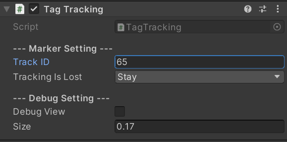

Tracking Target
描述
Tracking Target对应的是Tag Tracking组件
TagTracking的主要作用是，借助燧光特有的定位信标实现物体追踪的功能,只需要将对应的定位信标固定在需要识别的物体上即可。
属性 |
描述 |
|---|---|
Track ID |
设置定位信标的ID值 |
Tracking Is Lost |
设置定位信标丢失跟踪后的行为，Stay为留在原地，Follow Head为跟随头部移动 |
Debug View |
是否开启Debug模式，勾选则会在跟踪到的定位信标上渲染出一个坐标轴 |
Size |
设置Debug View中渲染出来的坐标轴的尺寸 |
使用方法
先确认你手上拿到的Tag的ID编号，通常在Tag的背面有写明，如果不清楚请咨询销售人员
在Tag Profile Loading组件上勾选支持步骤1中ID编号的标定文件，使用方法请查看 4.2.1 Tag Profile Loading
在Hierarchy页面点击鼠标右键，选择Ximmerse X->Tracking Target
将需要跟踪的模型作为TagTracking对象的子物体，如在此对象下面创建一个Cube模型
按照上述步骤创建完成，即可实现跟踪到定位信标后，实时显示一个Cube，如果您需要更复杂的使用方式，可以自行编写脚本实现。